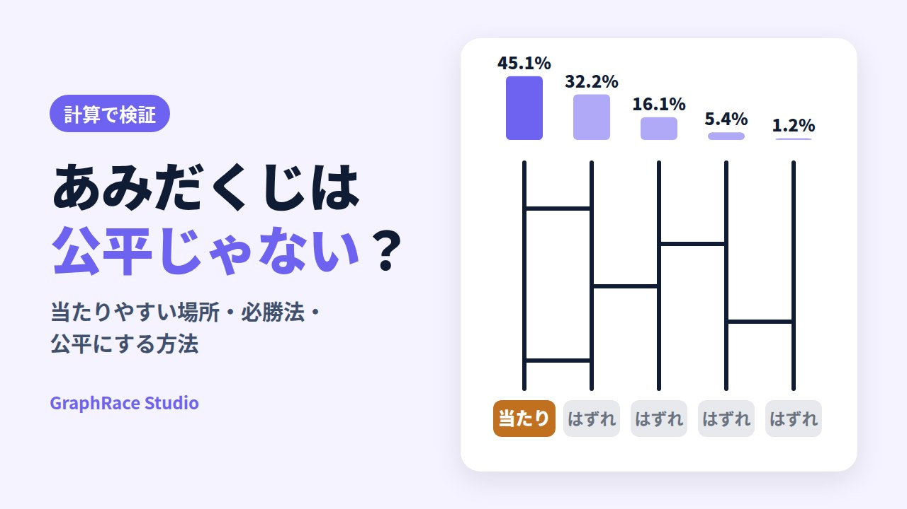

あみだくじの確率は公平じゃない？当たりやすい場所と必勝法を計算で検証

幹事決めや役員決め、席替えで使うあみだくじ。「どこを選んでも同じ確率」と思われがちですが、実際は当たりの真上に落ちやすく、選ぶ場所によって当たる確率が大きく変わります。
この記事では、あみだくじの確率を人数と横線の本数ごとに計算し、当たりたいとき・外れたいときの選び方（必勝法）と、あみだくじを公平にする方法をまとめました。人数と横線の本数を変えて確率を確かめられるシミュレーターも用意しています。
- あみだくじは選んだ縦線の真下に落ちやすい。横線が少ないほど偏りが大きい
- とくに偏るのは端の真下。6人・横線12本なら、公平な確率16.7%に対して34.5%
- 当たりが見えているなら、当たりたいときは真上（当たりが端寄りなら端）、外れたいときは当たりから一番遠い場所
- 当たりの位置が選ぶ人に見えていなければ、どこを選んでも確率は同じ。公平にするには結果を隠すのが一番確実
確率は、「横線を1本ずつ、隣り合う縦線のすき間のどこかに同じ確率で引く」という条件で、行列計算により正確に求めています。一部の値は20万回のシミュレーションでも確認しました（例：5人・横線10本で端の真下に落ちる確率は計算で33.6%、シミュレーションで33.7%）。実際の手書きでは横線の引き方に癖が出るため、目安として見てください。記事内で紹介している「あみだくじメーカー」は、当サイト（GraphRace Studio）が開発・運営している無料ツールです。
あみだくじの確率は、選ぶ場所で変わる
横線が少ないほど「真下」に落ちやすい
極端な例から考えると分かりやすくなります。横線が1本もなければ、どの縦線を選んでも必ず真下に着きます。横線が1本だけなら、動けるのはその横線がかかった2人だけで、残りの人は真下のままです。
横線を増やしていくと、真下に落ちる確率は少しずつ下がっていきます。5人のあみだくじで、左端を選んだときに真下（左端）に着く確率は次のとおりです。
| 横線の本数 | 0本 | 1本 | 2本 | 5本 | 10本 | 20本 | 30本 | 50本 |
|---|---|---|---|---|---|---|---|---|
| 左端の真下に着く確率 | 100% | 75.0% | 62.5% | 45.1% | 33.6% | 24.9% | 21.8% | 20.2% |
横にスクロールできます
公平なら5人で20%のはずですが、横線10本でも33.6%と、1.7倍近くあります。20%に近づくのは横線が50本を超えてからで、紙に手で書くあみだくじではなかなかそこまで引きません。
人数・横線の本数ごとの確率表
人数と横線の本数を変えて、「端を選んで真下に着く確率」「中央付近を選んで真下に着く確率」「端を選んで反対側の端に着く確率」を計算しました。横線の本数は、手書きでよくある人数の1〜3倍にしています。
| 人数・横線 | 公平な確率 | 端の真下 | 中央付近の真下 | 端から反対の端 |
|---|---|---|---|---|
| 4人・4本 | 25.0% | 43.2% | 28.4% | 7.4% |
| 4人・8本 | 25.0% | 32.5% | 26.3% | 17.5% |
| 4人・12本 | 25.0% | 28.1% | 25.5% | 21.9% |
| 5人・5本 | 20.0% | 45.1% | 24.8% | 1.2% |
| 5人・10本 | 20.0% | 33.6% | 20.6% | 7.1% |
| 5人・15本 | 20.0% | 28.1% | 20.1% | 12.0% |
| 6人・6本 | 16.7% | 46.4% | 25.6% | 0.1% |
| 6人・12本 | 16.7% | 34.5% | 19.6% | 2.3% |
| 6人・18本 | 16.7% | 28.7% | 17.9% | 5.6% |
| 8人・8本 | 12.5% | 47.9% | 26.8% | 0.0% |
| 8人・16本 | 12.5% | 35.5% | 18.8% | 0.1% |
| 8人・24本 | 12.5% | 29.5% | 15.8% | 0.8% |
| 10人・10本 | 10.0% | 48.9% | 27.5% | 0.0% |
| 10人・20本 | 10.0% | 36.1% | 19.1% | 0.0% |
| 10人・30本 | 10.0% | 30.0% | 15.6% | 0.1% |
横にスクロールできます
「中央付近」は、人数が偶数のときは中央の左側（6人なら左から3番目）で計算しています。0.0%と表示しているのは0.05%未満で、ゼロではありませんがほぼ起こりません。
端の真下はとくに偏る
表を見ると、どの条件でも一番偏っているのは「端の真下」です。10人・横線20本なら、公平な確率10%に対して36.1%と3.6倍もあります。一方で、端から反対側の端まで届くことはほとんどありません。
あみだくじの解説では「端は当たりにくい」と紹介されることもありますが、計算すると逆です。端の縦線は片側にしか横線がかからないため、横線を通る回数が少なく、スタート地点から動きにくいのです（理由は後ほど詳しく説明します）。
当たりの位置別・一番当たりやすい場所
では、当たりが真ん中にあるときや、端から2番目にあるときは、どこを選ぶのが一番よいのでしょうか。6人・横線12本のあみだくじで、当たりの位置ごとに各スタート位置の当選確率を計算しました。色つきのセルが、その行で一番当たりやすい場所です。
| 当たりの位置 ＼ 選ぶ位置 | 1番目 | 2番目 | 3番目 | 4番目 | 5番目 | 6番目 |
|---|---|---|---|---|---|---|
| 1番目（端） | 34.5% | 28.4% | 19.2% | 10.7% | 4.9% | 2.3% |
| 2番目 | 28.4% | 25.3% | 19.9% | 13.5% | 8.0% | 4.9% |
| 3番目 | 19.2% | 19.9% | 19.6% | 17.2% | 13.5% | 10.7% |
| 4番目 | 10.7% | 13.5% | 17.2% | 19.6% | 19.9% | 19.2% |
| 5番目 | 4.9% | 8.0% | 13.5% | 19.9% | 25.3% | 28.4% |
| 6番目（端） | 2.3% | 4.9% | 10.7% | 19.2% | 28.4% | 34.5% |
横にスクロールできます
この表から、「当たりの真上が一番」という定番の説明を、もう少し正確に言い直せます。
- 当たりが端にある：端（当たりの真上）が圧倒的に有利。34.5%
- 当たりが端から2番目にある：真上よりも、その外側の端のほうが当たりやすい（28.4%＞25.3%）
- 当たりが中ほどにある：真上と、端側にひとつずれた場所がほぼ同じ（19.6%と19.9%）。偏りそのものが小さい
つまり、あみだくじで有利になるのは「当たりの真上」というより、「当たりの近く、かつ端寄り」の位置です。10人・横線20本で計算しても同じ傾向で、当たりが端から2番目にあるときは端の29.0%が、真上の25.9%を上回りました。
この表は、縦に見ても横に見ても同じ数字が並びます。あみだくじでは「AからBに着く確率」と「BからAに着く確率」が必ず等しくなるためです。たとえば「1番目を選んで6番目に着く確率」と「6番目を選んで1番目に着く確率」は、どちらも2.3%です。
なぜ真下に落ちやすいのか
横線1本＝隣どうしの入れ替え
あみだくじの横線は、隣り合う2本の縦線を進んでいる人を入れ替える働きをします。上から順にたどっていくと、ある人が横線にぶつかるたびに、左か右へ1つだけ移動します。横線がかかっていない場所では、そのまま真下へ進みます。
横線がどこに引かれても「入れ替え」でしかないため、2人が同じゴールに着くことはありません。あみだくじが必ず1人1つの結果になるのは、この性質のおかげです。
酔っぱらいの千鳥足と同じ動き
1人の動きに注目すると、「ときどき左か右に1歩ずれる」を繰り返しているだけです。これは数学でランダムウォークと呼ばれる動きで、よく酔っぱらいの千鳥足にたとえられます。
右に1回、左に1回ずれれば元の位置に戻ります。遠くの縦線に着くには同じ方向に何度も続けてずれる必要がありますが、行ったり来たりしながら元の位置付近に戻ってくる道筋のほうがずっと多いため、スタートの真下付近に着く確率が高くなります。
端は「壁」があるので動きにくい
真ん中の縦線は左右両側に横線がかかるので、横線にぶつかる機会が多くなります。一方、端の縦線は片側にしか横線がかからないため、横線にぶつかる回数がおよそ半分です。さらに、端から離れても壁に跳ね返されるように戻ってきやすくなります。
6人・横線12本なら、横線がかかる可能性のあるすき間は5か所です。真ん中の縦線には、その5か所のうち2か所（左右）の横線がかかるので、1本の横線にぶつかる確率は2/5。端の縦線には1か所だけなので1/5です。これが、端の真下が一番偏る理由です。
計算方法をくわしく見る（行列の考え方）
縦線がn本のとき、すき間はn−1か所あります。横線1本を引く操作は「n−1か所のどこか1つで隣どうしを入れ替える」なので、1本あたりの移動確率をn×nの行列Tで表せます。真ん中の縦線なら、左へ1/(n−1)、右へ1/(n−1)、そのまま残る確率は1−2/(n−1)です。端の縦線は、隣へ1/(n−1)、残る確率は1−1/(n−1)です。
横線をk本引いたあとの確率は、この行列をk回かけたTkで求められます。Tは左右対称な行列なので、Tkも対称になり、「AからBに着く確率＝BからAに着く確率」が成り立ちます。kを大きくすると、すべての成分が1/nに近づいていきます（3人以上の場合）。
数学的な導出は、高校数学の美しい物語「あみだくじの確率を計算してみた」でくわしく解説されています。
確率シミュレーターで確かめる
人数・当たりの位置・横線の本数を選ぶと、各スタート位置の当選確率がグラフで表示されます。「1万回引いて確かめる」を押すと、ランダムなあみだくじを実際に1万回作って、当たった回数の割合を重ねて表示します。
横線の本数を少なくすると当たりの真上付近が高く伸び、本数を増やすほど棒の高さがそろって公平な確率に近づくのが分かります。人数を増やすと、同じ本数でも偏りがなかなか消えません。
あみだくじの必勝法
ここでいう必勝法は、当たり（または結果）の位置が見えている状態で、どこを選ぶかの話です。確率を上げる方法であって、必ず勝てる方法ではない点に注意してください。
当たりたいとき：当たりの真上。当たりが端寄りなら端
- 当たりが端にある → その端（真上）を選ぶ
- 当たりが端から2番目にある → 真上ではなく、外側の端を選ぶ
- 当たりが中ほどにある → 真上を選ぶ（端側の隣もほぼ同じ）
景品が複数あり、「一番ほしい景品」があるときも考え方は同じです。ほしい景品の真上か、それより端寄りの位置を選びます。
外れたいとき：当たりから一番遠い場所
幹事や役員、罰ゲームなど「当たりたくない」くじなら、当たりからできるだけ離れた縦線を選びます。当たりが端にあるなら、反対側の端が最も安全です。6人・横線12本なら、当たりの真上は34.5%ですが、反対側の端は2.3%まで下がります。
当たりが真ん中にある場合は、左右どちらの端を選んでも同じくらいです（6人・横線12本で当たりが3番目なら、6番目の10.7%が最も低くなります）。
当たりの位置が見えないとき：必勝法はない
結果が紙で隠されていて、当たりがどこにあるか分からない場合は、どこを選んでも当たる確率は同じ（1/人数）です。「端は当たりにくい」「真ん中が安全」といった噂は、当たりの位置が分からない限り意味がありません。
選ぶ順番は早いほうが有利
当たりの位置が見えているなら、先に選べる人ほど有利な場所を取れます。逆に、当たりが見えていなければ、選ぶ順番による差はありません。順番を決めるときにもめそうなら、結果を隠すルールにしてしまうのが簡単です。
後から横線を書き足せる場合
選んだあとに横線を書き足せるルールだと、ゴールのすぐ上に引いた1本で結果が隣と入れ替わります。最後に線を足した人が結果を動かしやすいので、横線は結果を隠した状態で書き足すか、全員が書き終えてから縦線を選ぶようにしましょう。
当たりが見えているあみだくじで有利な場所を選ぶのは、ルールの範囲内です。一方で、結果を見ながら自分に有利な横線をこっそり足す、くじを作った人が結果の位置を知ったまま参加する、といった方法は不正です。この記事の内容は、不公平なあみだくじを見抜いて、公平に作り直すために使ってください。
あみだくじは公平？公平にする方法
当たりが隠されていれば、全員の確率は同じ
ここまで見てきたとおり、あみだくじは「選ぶ場所」による偏りがあります。ただし、偏りが問題になるのは当たりの位置を知ったうえで場所を選べるときだけです。
選ぶ人が当たりの位置を知らなければ、誰にとっても「どこに当たりがあるか」は同じように分からないので、全員の当選確率は1/人数になります。つまり、あみだくじを公平にする一番確実な方法は、選び終わるまで結果を隠すことです。
横線だけで公平にするには何本必要？
結果を隠さずに、横線を増やすだけで公平にしようとすると、かなりの本数が必要です。すべての位置の確率を公平な値から±2ポイント、±1ポイント以内に収めるのに必要な横線の本数を計算しました。
| 人数 | 公平な確率 | ±2ポイント以内 | ±1ポイント以内 |
|---|---|---|---|
| 3人 | 33.3% | 6本 | 7本 |
| 4人 | 25.0% | 15本 | 18本 |
| 5人 | 20.0% | 29本 | 36本 |
| 6人 | 16.7% | 50本 | 63本 |
| 8人 | 12.5% | 114本 | 145本 |
| 10人 | 10.0% | 209本 | 272本 |
| 12人 | 8.3% | 339本 | 450本 |
人数が5人から10人に増えると、必要な本数は7倍以上になります。3〜4人なら手書きでも何とかなりますが、6人を超えると現実的ではありません。
紙のあみだくじを公平にする手順
- 縦線と結果を書いたら、結果を折って隠す結果を書いた人以外が当たりの位置を見られないようにします。
- 結果が見えない状態で、全員が横線を書き足す1人1〜2本ずつ書き足すと、作った人の意図が入りにくくなります。
- 結果を書いた人は最後に残った場所を選ぶ当たりの位置を知っている人が場所を選ばないようにします。
- 全員が選び終わってから結果を開く途中で結果が見えると、後から選ぶ人だけが有利になります。
オンラインのあみだくじを使う
手間なく公平にしたいなら、Webのあみだくじツールを使う方法もあります。ただし、横線をランダムに引くだけのツールでも、横線の本数が人数に対して少なければ、手書きと同じ偏りが残ります。ツールを選ぶときは、結果の並び順が乱数でシャッフルされるか、選び終わるまで結果を伏せられるかを確認すると安心です。
当サイトのあみだくじメーカーでの対策
当サイトのあみだくじメーカーでも、開発中に偏りを検証しました。横線の配置だけで確率を測ったところ、密集度「普通」・10人の場合、端の人が真下の結果に着く確率は約26%（4万回の再現で26.1%）と、公平な10%を大きく上回っていました。見た目の横線を大幅に増やすと、今度は線をたどるアニメーションが見づらくなります。
そこで、あみだくじを作るたびに下に並ぶ結果の順番を、暗号論的乱数でシャッフルする仕組みにしています。結果の並び順は、参加者や結果を入力した人にも事前には分かりません。このため、横線の本数に関係なく、誰がどの位置でも当たる確率は正確に1/人数になります。さらに「結果を伏せる（ブラインド）」をオンにすれば、光の玉がゴールに着くまで結果を隠しておけます。
どんなツールでも、結果を見てから気に入るまで作り直せば、特定の人に有利なくじを選べてしまいます。「再生成」は参加者の前で1回だけ行う、スクリーンに映しながら抽選する、といったルールにすると、全員が納得しやすくなります。
忘年会の景品抽選やチーム分けでの使い方は、忘年会で盛り上がるゲーム・余興15選でも紹介しています。
よくある質問（FAQ）
PTAの役員決めなどで、あみだくじに当たりたくないときはどこを選べばいいですか？
「当たり」の位置が見えているなら、当たりからいちばん遠い縦線を選びます。当たりが端にあるなら反対側の端です。6人・横線12本の場合、当たりの真上は34.5%ですが、反対側の端は2.3%まで下がります。当たりの位置が隠されているなら、どこを選んでも確率は同じです。
あみだくじは横線を何本引けば公平になりますか？
すべての位置の確率を公平な値から±1ポイント以内に収めるには、5人で約36本、6人で約63本、10人で約272本の横線が必要です（横線をランダムな位置に1本ずつ引いた場合の計算）。手書きでは現実的でないため、結果を隠す方法と組み合わせるのが確実です。
あみだくじは選ぶ順番で有利・不利がありますか？
当たりの位置が見えている場合は、先に選べる人ほど当たりやすい場所（または外れやすい場所）を取れるので有利です。当たりの位置が隠されていれば、選ぶ順番による差はありません。
2人のあみだくじは公平ですか？
2人の場合、横線はすべて同じ2本の縦線の間に入るため、結果は横線の本数だけで決まります。偶数本なら真下、奇数本なら反対側に着きます。横線の本数が数えられる状態なら公平ではありません。
スマホアプリやWebのあみだくじは公平ですか？
仕組みによります。横線をランダムに引くだけのツールでも、横線の本数が少なければ手書きと同じ偏りが残ります。結果の並び順を乱数でシャッフルしているか、選び終わるまで結果を伏せられるかを確認すると安心です。
あみだくじの名前の由来は？
室町時代のあみだくじは、はしご型ではなく、中心から放射状に線を引く形でした。その形が阿弥陀如来の後光（光背）に似ていたことから「あみだくじ」と呼ばれるようになったとされています。
まとめ
あみだくじは、見た目ほど公平なくじではありません。ただし、偏りが効いてくるのは当たりの位置が見えているときだけで、結果を隠せば誰にとっても同じ確率になります。
- あみだくじは選んだ縦線の真下付近に落ちやすい。横線が少なく、人数が多いほど偏りが大きい
- 一番偏るのは端の真下。10人・横線20本なら公平な10%に対して36.1%
- 当たりたいときは当たりの真上（当たりが端から2番目までなら端）、外れたいときは当たりから一番遠い場所
- 横線だけで公平にするには、5人で約36本、10人で約272本が必要
- 公平にする一番確実な方法は、選び終わるまで結果を隠すこと
結果の並びを毎回シャッフルするので、誰がどの位置でも当たる確率は同じ。会員登録やアプリのインストールは不要で、参加者と結果を入力するだけで作れます。